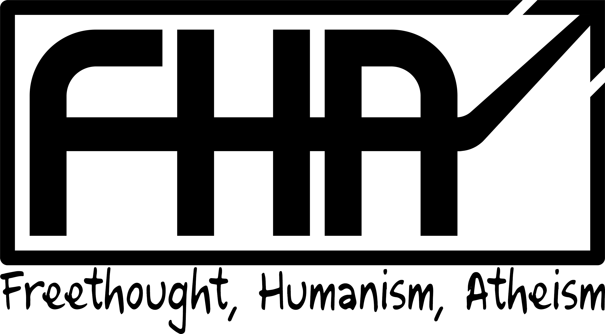

Paulo Bittencourt’s Websites and Social Media Profiles
If ceasing to believe in God, abandoning religion or leaving the church is causing you emotional problems and you, because of that, need someone to talk to and counseling, contact me.
“Atheism is a natural result of intellectual honesty.”(Wasting Time on God)
Author of the books↗︎ Liberated from Religion and Wasting Time on God, Paulo Bittencourt was born in Paraná, Brazil, spent his childhood in Rio de Janeiro and studied Theology in São Paulo. Close to becoming a pastor, he had doubts, ventured through Europe and ended up settling in Austria. The book Ethics, by Bento de Espinosa (Baruch Spinoza), strengthened his skepticism and consolidated him as a freethinker. Paulo Bitencourt dedicates his life to helping people liberate themselves from religion.
Paulo Bittencourt’s social media profiles↗︎